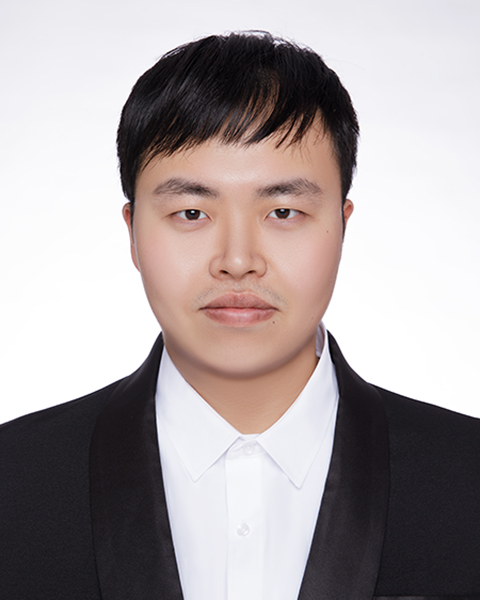

Zelin ZhaoPh.D. CandidateComputer Science and Engineering Department |
 |
I started my Ph.D. life in the CSE Department of CUHK in 2021 Fall. My supervisor is Prof. Jiaya Jia. Prior to that, I received the B.E. degree in Computer Science from SJTU in 2021 (ranked 2/147, GPA 91.83/100). I had a great time visiting MIT CSAIL (supervised by Prof. Jiajun Wu and Prof. Josh Tenenbaum) and Gatech (supervised by Prof. Le Song).
My research interests include computer vision and machine learning. Welcome to connect me via my Wechat ytc407 with your name & institution noted.
| Hong Kong Ph.D. Fellowship Scheme | 2021 |
| First Prize of Graduate Thesis in Computer Science, SJTU | 2021 |
| National Scholarship (Ranked 1/150) | 2018 |
| Scholarship of Shanghai City | 2017 |
| First Prize in Chinese Physics Olympiad (Shanxi Province) | 2015 |
| Meritorious Winner in Mathematical Contest in Modeling (MCM) | 2018 |
| The First-class Academic Excellence Scholarship of SJTU (Top 1%) | 2018 |
| Zhiyuan Honors Scholarship | 2016-2020 |
| Reviewer for the European Conference on Computer Vision (ECCV) | 2022 |
| Reviewer for the IEEE / CVF Computer Vision and Pattern Recognition Conference (CVPR) | 2022 |
| Reviewer for the AAAI Conference on Artificial Intelligence (AAAI) | 2022 |
| Teacher assistant for ENGG2440A Discrete Mathematics for Engineers | 2021 |
| Reviewer for the International Conference on Computer Vision (ICCV) | 2021 |
| Invited reviewer for the Pattern Recognition | 2021 |